28 Epidemic curves

An epidemic curve (also known as an “epi curve”) is a core epidemiological chart typically used to visualize the temporal pattern of illness onset among a cluster or epidemic of cases.
Analysis of the epicurve can reveal temporal trends, outliers, the magnitude of the outbreak, the most likely time period of exposure, time intervals between case generations, and can even help identify the mode of transmission of an unidentified disease (e.g. point source, continuous common source, person-to-person propogation). One online lesson on interpretation of epi curves can be found at the website of the US CDC.
In this page we demonstrate two approaches to producing epicurves in R:
- The incidence package, which can produce an epi curve with fast and simple commands
- The ggplot2 package, which allows for advanced customizability via more complex commands
The combination of these packages is also addressed, as are specific use-cases such as:
- Plotting aggregated count data
- Faceting or producing small-multiples
- Applying moving averages
- Showing which data are “tentative” or subject to reporting delays
- Overlaying cumulative case incidence using a second axis
28.1 Preparation
Packages
This code chunk shows the loading of packages required for the analyses.
pacman::p_load(
rio, # file import/export
here, # relative filepaths
lubridate, # working with dates/epiweeks
aweek, # alternative package for working with dates/epiweeks
incidence, # epicurves of linelist data
stringr, # search and manipulate character strings
forcats, # working with factors
RColorBrewer, # Color palettes from colorbrewer2.org
tidyverse # data management + ggplot2 graphics
) Load data
Two example datasets are used in this section:
- Linelist of individual cases from a simulated epidemic
- Aggregated counts by hospital from the same simulated epidemic
The datasets are imported using the import() function from the rio package. See the page on Import and export for various ways to import data. The linelist and aggregated counts are displayed below.
linelist <- rio::import("linelist_cleaned.xlsx")Case linelist
The first 50 rows are displayed
Case counts aggregated by hospital
The first 50 rows are displayed
Set parameters
You may want to set editable parameters for production of a report, such as the date for which the data is current (the “data date”).
You can then reference data_date in the code when applying filters or in captions that auto-update.
## set the report date for the report
## note: can be set to Sys.Date() for the current date
data_date <- as.Date("2015-05-15")Verify dates
Verify that each relevant date column is class Date and has an appropriate range of values.
You can do this one-by-one using hist() for histograms, or range() with na.rm=TRUE.
An alternative is to use a for loop to print a histogram for each pre-defined date column.
# create character vector of column names
DateCols <- as.character(tidyselect::vars_select(names(linelist), matches("date|Date|dt")))
# Produce histogram of each date column
for (Col in DateCols) { # open loop. iterate for each name in vector DateCols
hist(linelist[, Col], # print histogram of the column in linelist dataframe
breaks = 50, # number of breaks for the histogram
xlab = Col) # x-axis label is the name of the column
} # close the loop


28.2 Epicurves with incidence package
Below we demonstrate how to make epicurves using the incidence package.
CAUTION: The incidence package currently expects data to be in a “linelist” format of one row per case (not aggregated counts). If your data is aggregated counts, read the section on aggregated data using ggplot2.
The documentation for plotting an incidence object can be accessed by entering ?plot.incidence in your R console. For further information see this incidence package vignette.
Simple example
2 steps are requires to plot an epicurve with the incidence package:
-
Create an incidence object (using the function
incidence())- Provide the case linelist
- Specify the time interval into which the cases should be aggregated (daily, weekly, monthly..)
- Specify any sub-groups
- Provide the case linelist
-
Plot the incidence object
- Specify labels, aesthetic themes, etc.
A simple example - an epicurve of daily cases:
# load incidence package
pacman::p_load(incidence)
# create the incidence object, aggregating cases by day
epi_day <- incidence(linelist$date_onset, # the dataset and date column of interest
interval = "day") # the time interval
# plot the incidence object
plot(epi_day)
Change time interval of case aggregation
The interval argument of incidence() defines how the observations are grouped into vertical bars. Some options are given below:
| Argument option | Further explanation |
|---|---|
| “week” | note: Monday start day is default |
| “2 weeks” | or 3, 4, 5… |
| “Sunday week” | weeks beginning on Sundays |
| “2 Sunday weeks” | or 3, 4, 5… |
| “MMWRweek” | week starts on Sundays - see US CDC |
| “month” | 1st of month |
| “quarter” | 1st of month of quarter |
| “2 months” | or 3, 4, 5… |
| “year” | 1st day of calendar year |
Below are examples of how different intervals look when applied to the linelist. The format and frequency of the date labels on the x-axis are the defaults for the specified interval.
# Create the incidence objects (with different intervals)
##############################
# Weekly (Monday week by default)
epi_wk <- incidence(linelist$date_onset, interval = "Monday week")
# Sunday week
epi_Sun_wk <- incidence(linelist$date_onset, interval = "Sunday week")
# Three weeks (Monday weeks by default)
epi_3wk <- incidence(linelist$date_onset, interval = "3 weeks")
# Monthly
epi_month <- incidence(linelist$date_onset, interval = "month")
# Plot the incidence objects (+ titles for clarity)
############################
plot(epi_wk)+ labs(title = "Monday weeks")
plot(epi_Sun_wk)+ labs(title = "Sunday weeks")
plot(epi_3wk)+ labs(title = "3 (Monday) weeks")
plot(epi_month)+ labs(title = "Months")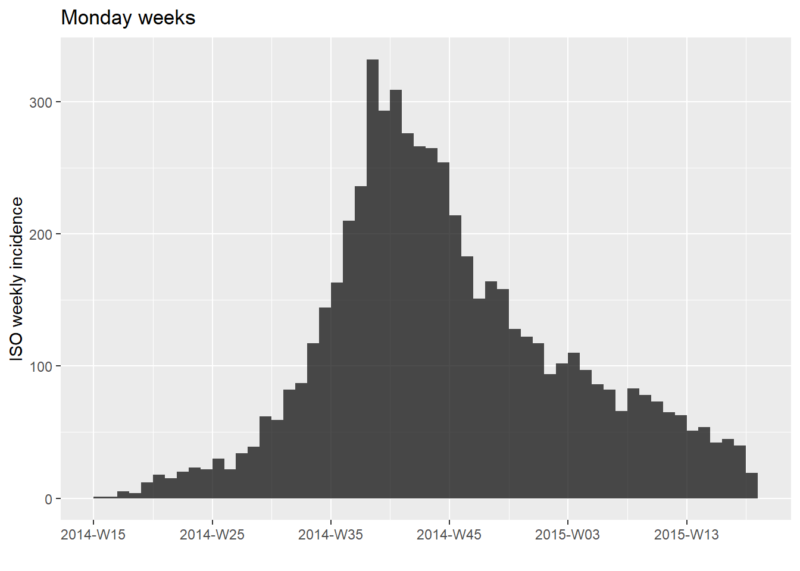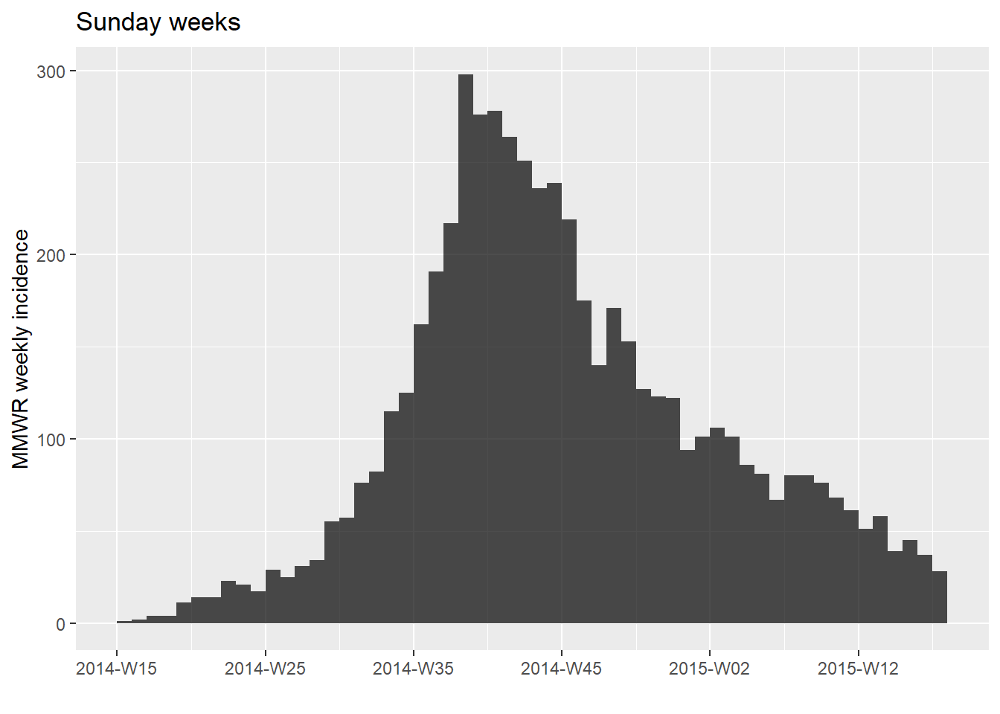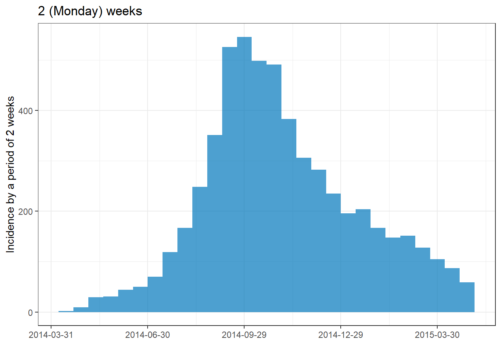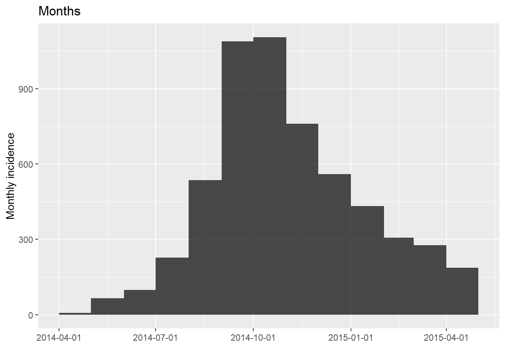
Filtered data
To plot the epicurve of a subset of data:
- Filter the linelist data
- Provide the filtered data to the
incidence()command
- Plot the incidence object
The example below uses data filtered to show only cases at Central Hospital.
# filter the linelist
central_data <- linelist %>%
filter(hospital == "Central Hospital")
# create incidence object using filtered data
central_outbreak <- incidence(central_data$date_onset, interval = "week")
# plot the incidence object
plot(central_outbreak) + labs(title = "Weekly case incidence at Central Hospital")
Modifications with plot()
An epicurve produced by incidence can be modified via these arguments within the plot() function.
-
show_cases =Logical; if TRUE, each case is shows as a box. Displays best on smaller outbreaks.
-
color =Color of case bars/boxes
-
border =Color of line around boxes, ifshow_cases = TRUE
-
alpha =Transparency of case bars/boxes (1 is fully opaque, 0 is fully transparent)
-
xlab =Title of x-axis
-
ylab =Title of y-axis - defaults to user-defined incidence time interval
-
labels_week =Logical; whether x-axis labels are in week format (YYYY-Www) or date format (YYYY-MM-DD), absent other modifications -
n_breaks =Number of x-axis label breaks, absent other modifications
-
first_date&last_dateDates used to limit the date axis of the plot
Type ?plot.incidence in the R console for more details on each. Below is an example using some of the above arguments.
To further adjust plot appearance, see the section on using ggplot() to apply theme() arguments to the incidence plot.
# filter the linelist
central_data <- linelist %>%
filter(hospital == "Central Hospital")
# create incidence object using filtered data
central_outbreak <- incidence(central_data$date_onset, interval = "week")
# plot incidence object
plot(central_outbreak,
xlab = "Week of onset",
ylab = "Week of onset",
show_cases = TRUE, # show each case as an individual box
alpha = 0.5,
color = "darkblue",
border = "white")
Modifications with ggplot2
You can add ggplot2 modifications to the incidence plot by adding a + after the close of the incidence plot() function, as demonstrated below. See the ggplot2 section and page on ggplot tips for more options.
# filter the linelist
central_data <- linelist %>%
filter(hospital == "Central Hospital")
# create incidence object using filtered data
central_outbreak <- incidence(central_data$date_onset, interval = "week")
# plot
plot(central_outbreak, # plot with incidence package and arguments
xlab = "Week of onset",
ylab = "Weekly case incidence",
show_cases = TRUE,
alpha = 0.5,
color = "darkblue",
border = "black")+
# Add modifications using ggplot() functions
############################################
scale_x_date( # convert to ggplot date scale (changes default label format)
expand = c(0,0))+ # remove excess space on left and right
scale_y_continuous(
expand = c(0,0))+ # remove excess space below 0 on y-axis
labs(
title = "Incidence plot with ggplot() modifications",
caption = stringr::str_glue( # dynamic caption - see page on characters and strings
"n = {central_cases} from Central Hospital
Case onsets range from {earliest_date} to {latest_date}. {missing_onset} cases are missing date of onset and not shown",
central_cases = nrow(central_data),
earliest_date = format(min(central_data$date_onset, na.rm=T), format = '%a %d %b %Y'),
latest_date = format(max(central_data$date_onset, na.rm=T), format = '%a %d %b %Y'),
missing_onset = nrow(central_data %>% filter(is.na(date_onset)))))+
theme_classic()+ # simplify background
theme(
axis.title = element_text(size = 12, face = "bold"), # axis titles larger and bold
axis.text = element_text(size = 10, face = "bold"), # axis text size and bold
plot.caption = element_text(hjust = 0) # move caption to left
)
Group and color by values
To color cases by a value, provide the column to the groups = argument in the incidence() command.
In the example below the cases in the whole outbreak are colored by their age category. Note the use of incidence() argument na_as_group =. If TRUE (by default), missing values (NA) will form their own group. To adjust the legend title, add the ggplot2 function labs() as shown in the second plot, specifying a label for fill =.
# Create incidence object, with data grouped by age category
age_outbreak <- incidence(linelist$date_onset, # date of onset for x-axis
interval = "week", # Monday weekly aggregation of cases
groups = linelist$age_cat, # color by age_cat value
na_as_group = TRUE) # missing values assigned their own group
# plot the grouped incidence object
plot(age_outbreak)
# plot the grouped incidence object, specifying legend title
plot(age_outbreak)+
labs(fill = "Age category")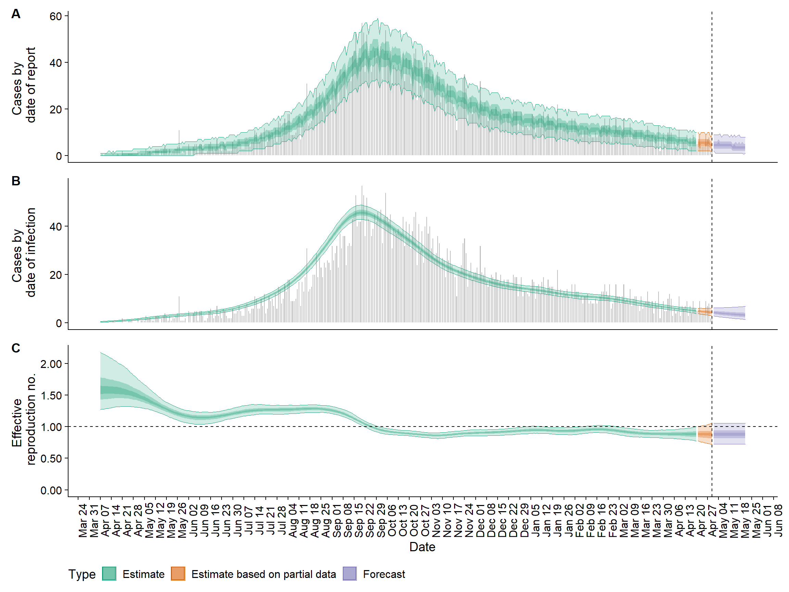
Change colors
To specify colors manually, provide the name of the color or a character vector of colors to the argument color =. The number of colors listed must equal the number of groups (be aware of missing values as a group)
# weekly outbreak by hospital
hosp_outbreak <- incidence(linelist$date_onset,
interval = "week",
groups = linelist$hospital,
na_as_group = FALSE) # Missing values not assigned their own group
# default colors
plot(hosp_outbreak)
# manual colors
plot(hosp_outbreak, color = c("darkgreen", "darkblue", "purple", "grey", "yellow", "orange"))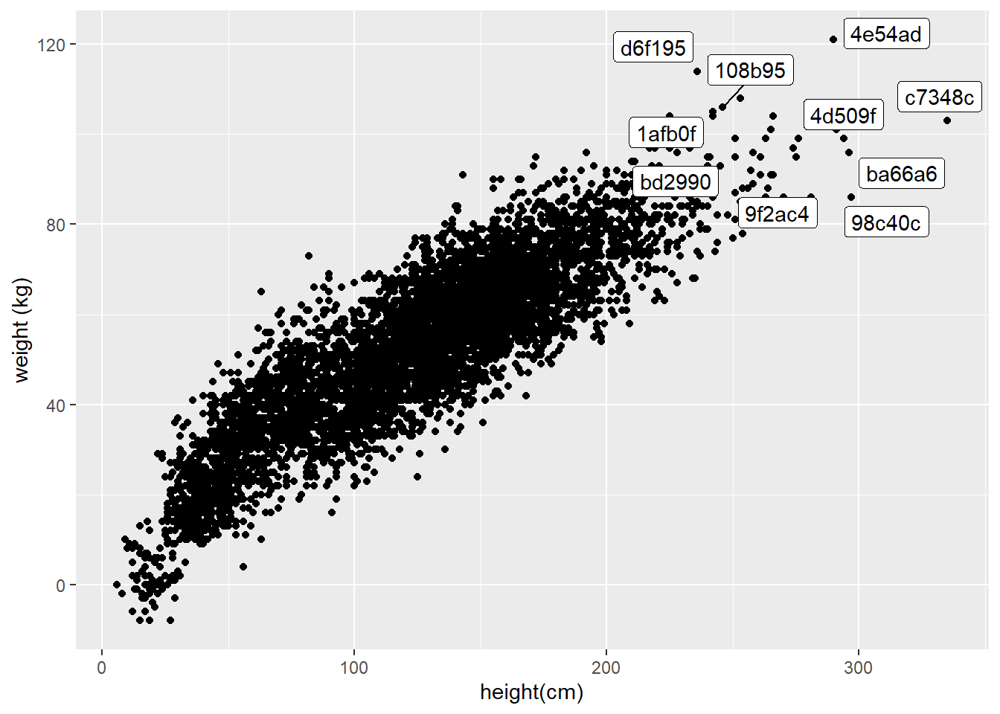
Change color palette
Use the argument col_pal in plot() to change the color palette to one of the default base R palettes (do not put the name of the palette in quotes).
Alternatively, adjust the palette with ggplot2 “fill” scales - see the ggplot tips page for details.
# Create incidence object, with data grouped by age category
age_outbreak <- incidence(linelist$date_onset, # date of onset for x-axis
interval = "week", # weekly aggregation of cases
groups = linelist$age_cat, # color by age_cat value
na_as_group = TRUE) # missing values assigned their own group
# plot the epicurve with default palette
plot(age_outbreak)
# plot with different color palette
plot(age_outbreak, col_pal = rainbow)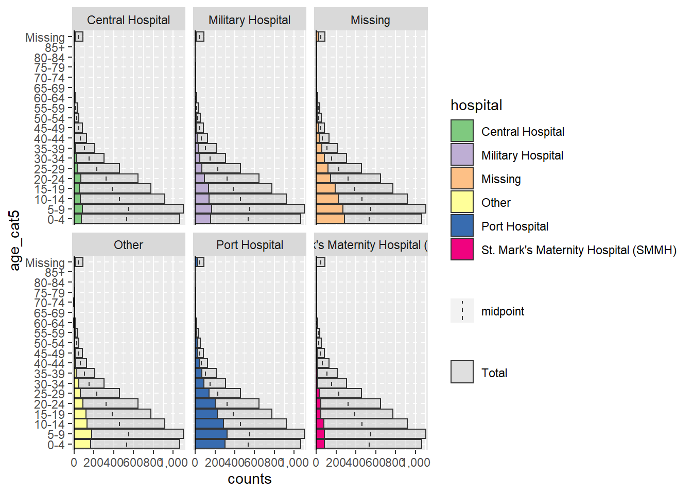
Adjust level order
To adjust the order of group appearance (on plot and in legend), the grouping column must be class Factor. See the page on Factors for more information.
Below is an epicurve by gender, and the objective is to show “Missing” on the top of the epicurve, “Male” in the middle, and “Female” on the bottom - but to have the Legend in the reverse order so that Missing is on the bottom of the legend.
First, let’s see the plot with the default ordering:
# ORIGINAL - hospital NOT as factor
###################################
# create weekly incidence object, rows grouped by hospital and week
hospital_outbreak <- incidence(
linelist$date_onset,
interval = "week",
groups = linelist$hospital)
# plot incidence object
plot(hospital_outbreak,
show_cases = FALSE)+
labs(title = "ORIGINAL - hospital not a factor")Now, to make some changes to the levels we can do the following:
- The package forcats is loaded, to work with factors
- A dataset for plotting is defined in which:
- the
gendercolumn is re-defined as a factor withas_factor()
- missing values (
NA) are converted to “Missing” withfct_explicit_na()
- low-count groups are combined into “Other”, we leave the top 3 with
fct_lump()
- the order of levels are defined with “Other” and “Missing” first, so they appears at the top of the bars
- the
- The incidence object is created and plotted as before
- Specify colors so that “Missing” is grey, change background to white
- The order of the legend is reversed using
guides()from ggplot2
- Specify colors so that “Missing” is grey, change background to white
# MODIFIED - hospital as factor
###############################
# load forcats package for working with factors
pacman::p_load(forcats)
# Convert hospital column to factor and adjust levels
plot_data <- linelist %>%
mutate(hospital = as_factor(hospital)) %>% # define as factor
mutate(hospital = fct_explicit_na(hospital, "Missing")) %>% # convert NA to "Missing"
mutate(hospital = fct_lump(hospital, n = 3)) %>% # Keep 3 most frequent hospitals, with remaining combined into "Other"
mutate(hospital = fct_relevel(hospital, c("Missing", "Other"))) # Set "Missing" and "Other" as top levels
# Create weekly incidence object, grouped by hospital and week
hospital_outbreak_mod <- incidence(
plot_data$date_onset,
interval = "week",
groups = plot_data$hospital)
# plot incidence object
plot(hospital_outbreak_mod,
show_cases = FALSE, # do NOT show box around each case
color = c("grey", "beige", "darkgreen", "brown"))+ # specify colors
# ggplot modifications
guides(fill = guide_legend(reverse = TRUE))+ # reverse order of legend only
theme_classic()+
# labels added via ggplot
labs(
title = "MODIFIED - hospital as factor", # plot title
subtitle = "Other & Missing at top of epicurve and bottom of legend and fewer categories",
y = "Weekly case incidence", # y axis title
x = "Week of symptom onset", # x axis title
fill = "Hospital") # title of legend Change legend
Add ggplot2 commands to the incidence plot, such as:
-
labs(fill = "Legend title")to change the legend title
-
theme(legend.title = element_blank())to remove the legend title
-
theme(legend.position = "top")(or “bottom”, “left”, “right”) -
theme(legend.direction = "horizontal")
-
guides(fill = guide_legend(reverse = TRUE))to reverse order of the legend
See the page of ggplot tips for more details on working with legends.
Date-axis labels/gridlines
TIP: Remember that date-axis labels are independent from the aggregation of the data into bars
Modify the bars
The aggregation of data into bars occurs when you set the interval = when creating the incidence object. The options for interval include options like “day”, “Monday week”, “Sunday week”, “month”, “2 weeks”, etc, as described in an earlier section.
Modify date-axis labels (frequency & format)
If working with the incidence package, you have several options to make modifications to the date-axis labels:
- Add incidence package functions
scale_x_incidence()andmake_breaks()
- Add the ggplot2 function
scale_x_date()and arguments such asdate_breaks =anddate_labels =
- Use a combination of the above
Option 1: Add scale_x_incidence() only
scale_x_incidence() is from the incidence package.
-
Advantages: Short code. Auto-adjusts weekly labels to the interval of incidence object (Monday, Sunday weeks, etc.)
-
Disadvantages: Cannot make fine adjustments to label format, nor to minor vertical grid-lines between labels
- Syntax: Provide the name of the incidence object to ensure date labels align with specified interval (e.g. Sunday or Monday weeks)
Optional arguments:
- Use
n_breaks =to specify the number of date labels, which start from the beginning of the interval of the first case- Tip: for breaks every nth interval, use
n_breaks = nrow(i)/n(where “i” is the incidence object name and “n” is a number)
- Tip: for breaks every nth interval, use
- Use
labels_week =to adjust whether labels are formatted as weeks (YYYY-Www) or dates (YYYY-MM-DD)- One vertical gridline will appear per date label
Other notes:
- If the interval is “month”,
n_breaksandlabels_weekwill behave differently
- Adding ggplot2’s
scale_x_date()to the plot will remove any labels created byscale_x_incidence - Type
?scale_x_incidenceinto the R console to see more information
See how in the plot below (with Sunday week interval), the first date label is 27 April 2014, which is the Sunday before the first case on May 1
# create weekly incidence object (Sunday weeks)
outbreak <- incidence(central_data$date_onset, interval = "Sunday week")
# plot with scale_x_incidence()
plot(outbreak)+
scale_x_incidence(outbreak, # name of incidence object
labels_week = FALSE, # show dates instead of weeks
n_breaks = nrow(outbreak)/8) # breaks every 8 weeks from Sunday before first case
Option 2: scale_x_date() and make_breaks()
Add scale_x_date() from ggplot2, but also leverage make_breaks() from incidence:
-
Advantages: Best of both worlds: weekly labels auto-aligned to incidence interval, and you can make detailed adjustments to label format
- Disadvantages: If your want minor grid-lines on Sunday-week date labels, they are not auto-aligned, see Option 3
Steps:
- Creating the incidence object
- Make a vector of date breaks using
make_breaks(), which is similar toscale_x_incidence(). Provide the incidence object name and optionallyn_breaksas described above.
- Add
scale_x_date()to the incidence plot and use the following arguments:
-
breaks =provide the breaks vector you created withmake_breaks(), by accessing the$breaksvector (see example below)
-
date_labels =you can make fine adjustments to date label format (e.g. “%d %b”) (use “” for new line)
-
date_minor_breaks =Sets frequency of minor gridlines, e.g. “weeks”. If using Sunday weeks and you want minor gridlines see Option 3.
Note how in the example below, the incidence object interval is Monday weeks, and the first date label is 28 April, the Monday before the first case reported 1 May.
# Break modification using scale_x_date() and make_breaks()
###########################################################
# make incidence object
outbreak <- incidence(central_data$date_onset, interval = "Monday week")
# make breaks
my_labels <- make_breaks(outbreak, n_breaks = nrow(outbreak)/6) # breaks every 6 weeks
# plot
plot(outbreak)+
scale_x_date(
breaks = my_labels$breaks, # use $breaks on the make_breaks() output
date_labels = "%d %b\n%Y", # detailed adjustment to date label format
date_minor_breaks = "weeks") # vertical lines each week (only works for Monday week incidence objects) Option 3: Use scale_x_date() only
Add only scale_x_date() from ggplot2 to the incidence plot:
-
Advantages: Complete control over breaks, labels, gridlines, and plot width
- Disadvantages: More code required, more opportunity to make mistakes
Syntax:
If your incidence intervals are days or Monday weeks it’s easy!:
- Provide an interval for date labels to
date_breaks =(e.g. “day”, “week”, “2 weeks”, “month”, “year”) - Provide an interval for minor vertical grid lines interval to
date_minor_breaks =
# Date break modification using scale_x_date() only
###################################################
# make incidence object
outbreak <- incidence(central_data$date_onset, interval = "Monday week")
# plot
plot(outbreak)+
scale_x_date(expand = c(0,0), # remove excess x-axis space below and after case bars
date_breaks = "3 weeks", # date labels appear every 3 Monday weeks
date_minor_breaks = "week", # minor vertical lines appear every Monday week
date_labels = "%d\n%b\n'%y") # date labels format If your incidence intervals are Sunday weeks, the code required is more complex - see below for a Sunday week example
- Provide a sequence of Sunday dates to
breaks =and tominor_breaks =
- Use
date_labels =for formatting (see Dates page for tips)
- Add the argument
expand = c(0,0)to start labels at the first incidence bar. Otherwise, the first label will shift depending on your specified label interval.
A Sunday week example
If you want a plot of Sunday weeks and also finely-adjusted label formats, you might find this code example helpful.
Here is an example of producing a weekly epicurve using incidence for Sunday weeks, with finely-adjusted date labels through ggplot2’s scale_x_date():
# load packages
pacman::p_load(tidyverse, # for ggplot
incidence, # for epicurve
lubridate) # for floor_date() and ceiling_date()
# create incidence object (specifying SUNDAY weeks)
central_outbreak <- incidence(central_data$date_onset,
interval = "Sunday week") # equivalent to "MMWRweek" (see US CDC)
# plot() the incidence object
plot(central_outbreak)+
### ggplot() commands added to the plot
# Date-axis
scale_x_date(
# remove excess x-axis space below and after case bars
expand = c(0,0),
# date labels every 3 weeks, from Sunday before first case to Sunday after last case
breaks = seq.Date(from = as.Date(floor_date(min(central_data$date_onset, na.rm=T), "week", week_start = 7)),
to = as.Date(ceiling_date(max(central_data$date_onset, na.rm=T), "week", week_start = 7)),
by = "3 weeks"),
# grid-lines every week, from Sunday before first case to Sunday after last case
minor_breaks = seq.Date(from = as.Date(floor_date(min(central_data$date_onset, na.rm=T), "week", week_start = 7)),
to = as.Date(ceiling_date(max(central_data$date_onset, na.rm=T), "week", week_start = 7)),
by = "7 days"),
# date labels format
date_labels = "%d\n%b\n'%y")+
# Y-axis
scale_y_continuous(
expand = c(0,0))+ # remove excess space under x-axis
# Aesthetic themes
theme_minimal()+ # simplify background
theme(
axis.title = element_text(size = 12, face = "bold"), # axis titles formatting
plot.caption = element_text(face = "italic", hjust = 0))+ # caption formatting, left-aligned
# Plot labels
labs(x = "Week of symptom onset (Sunday weeks)",
y = "Weekly case incidence",
title = "Weekly case incidence at Central Hospital (Sunday weeks)",
#subtitle = "",
caption = stringr::str_glue("n = {nrow(central_data)} from Central Hospital; Case onsets range from {format(min(central_data$date_onset, na.rm=T), format = '%a %d %b %Y')} to {format(max(central_data$date_onset, na.rm=T), format = '%a %d %b %Y')}\n{nrow(central_data %>% filter(is.na(date_onset)))} cases missing date of onset and not shown"))
Facets/small multiples
To facet the plot by a variable (make “small multiples”), you must do this via ggplot2. See the section on facets.
28.2.1 Other tips
DANGER: Be cautious if a static y-axis scale (e.g. 0 to 30 by 5: seq(0, 30, 5)). Static numbers can cut-off your data if the data changes!.
Note: if using aggregated counts (for example an epiweek x-axis) your x-axis may not be Date class and may require use scale_x_discrete() instead of scale_x_date() - see section on aggregated data epicurves for more details.
28.3 Epicurves with ggplot2
Using the ggplot2 package alone to create an epicurve can offer more customizable plots, but also involves more code and potential for error:
Unlike using incidence package, you must manually control the aggregation of the data (into weeks, months, etc) and the labels on the date axis. If not carefully managed, this can lead to headaches.
These examples use a subset of the linelist dataset - only the cases from Central Hospital.
central_data <- linelist %>%
filter(hospital == "Central Hospital")Examples
To produce an epicurve with ggplot() there are three main elements:
- A histogram, to aggregate the linelisted cases into “bins” and display bars reflecting the counts per bin
- Scales for the axes and their associated labels
- Themes for the plot appearance, including titles, labels, captions, etc.
Simplest examples
Below is perhaps the most simple code to produce daily and weekly epicurves.
# daily
ggplot(data = central_data, aes(x = date_onset)) + # x column must be class Date
geom_histogram(binwidth = 1)+ # cases binned by 1 day
labs(title = "Daily")
# weekly
ggplot(data = central_data, aes(x = date_onset)) +
geom_histogram(binwidth = 7)+ # cases binned each 7 days, beginning from first case (!)
labs(title = "Weekly")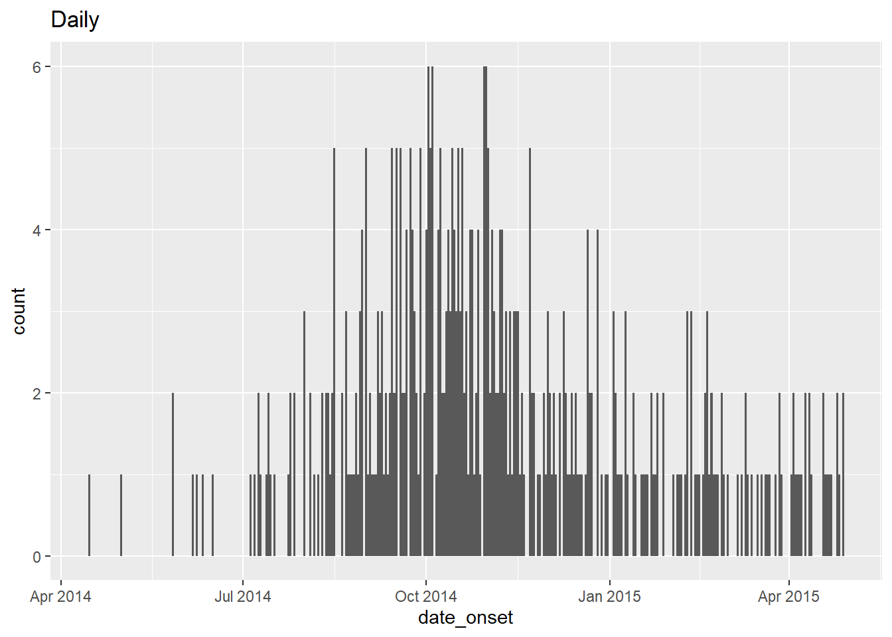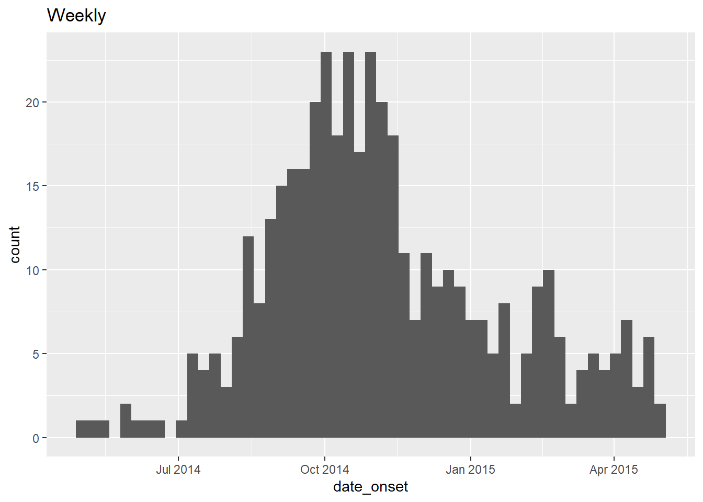
CAUTION: Using binwidth = 7 starts the first bin at the first case, which could be any day of the week! To create specific Monday or Sunday weeks, see guidance below .
Specify bin start dates
To create weekly epicurves where the bins begin on a specific day of the week (e.g. Monday or Sunday), specify the histogram bin breaks = manually (not with binwidth). This can be done by creating a sequence of dates using the seq.Date() function (base R):
This function expects to =, from =, and by = arguments as shown below.
## [1] "2015-01-01" "2015-02-01" "2015-03-01" "2015-04-01" "2015-05-01" "2015-06-01" "2015-07-01" "2015-08-01" "2015-09-01" "2015-10-01" "2015-11-01" "2015-12-01" "2016-01-01"You can start/end the sequence at a specific date, as shown above, or you can write flexible code to begin the sequence at a specific day of the week before the first case. An example of creating such dynamic weekly breaks is below:
# Sequence of dates from the Monday before the first case to the Monday after the last case, by week
seq.Date(from = as.Date(floor_date(min(central_data$date_onset, na.rm=T), "week", week_start = 1)),
to = as.Date(ceiling_date(max(central_data$date_onset, na.rm=T), "week", week_start = 1)),
by = "7 days")## [1] "2014-04-28" "2014-05-05" "2014-05-12" "2014-05-19" "2014-05-26" "2014-06-02" "2014-06-09" "2014-06-16" "2014-06-23" "2014-06-30" "2014-07-07" "2014-07-14" "2014-07-21"
## [14] "2014-07-28" "2014-08-04" "2014-08-11" "2014-08-18" "2014-08-25" "2014-09-01" "2014-09-08" "2014-09-15" "2014-09-22" "2014-09-29" "2014-10-06" "2014-10-13" "2014-10-20"
## [27] "2014-10-27" "2014-11-03" "2014-11-10" "2014-11-17" "2014-11-24" "2014-12-01" "2014-12-08" "2014-12-15" "2014-12-22" "2014-12-29" "2015-01-05" "2015-01-12" "2015-01-19"
## [40] "2015-01-26" "2015-02-02" "2015-02-09" "2015-02-16" "2015-02-23" "2015-03-02" "2015-03-09" "2015-03-16" "2015-03-23" "2015-03-30" "2015-04-06" "2015-04-13" "2015-04-20"
## [53] "2015-04-27" "2015-05-04"Let’s unpack the rather daunting code above:
- The “from” value (earliest date of the sequence) is created as follows: the minimum date value (
min()withna.rm=TRUE) in the columndate_onsetis fed tofloor_date()from the lubridate package.floor_date()uses the specified arguments to return the start date of that “week”, given that the start of each week is a Monday (week_start = 1).
- Likewise, the “to” value (end date of the sequence) is created using the inverse function
ceiling_date()to return the Monday after the last case.
- The “by” argument of
seq.Date()can be set to any number of days, weeks, or months.
These sequences of dates can be used to create histogram bin breaks, but also the breaks for the date labels, which may be independent from the bins. Read more about the date labels in later sections.
Below are detailed example codes to produce weekly epicurves for Monday weeks and for Sunday weeks.
Monday weeks example
Of note:
- The break points of the histogram bins are specified manually to begin the Monday (
week_start = 1) before the earliest case and to end the Monday after the last case (see explanation above).
- The breaks for date labels on the x-axis are easy and use
date_breaks =withinscale_x_date()because we want Monday weeks. For Sunday weeks, see next example.
- Minor vertical gridlines between date labels are made using
date_minor_breaks =withinscale_x_date(). Again, Sunday week alignment would use a slightly different method.
- Adding
expand = c(0,0)to the x and y scales removes excess space on each side of the axes, which also ensures the date labels begin at the first bar.
- Color and fill of the bars are defined in
geom_histogram()
# TOTAL MONDAY WEEK ALIGNMENT
#############################
ggplot(central_data, aes(x = date_onset)) +
# make histogram: specify bin break points: starts the Monday before first case, end Monday after last case
geom_histogram(
# bars
color = "darkblue", # color of lines around bars
fill = "lightblue", # color of fill within bars
breaks = seq.Date(
from = as.Date(floor_date(min(central_data$date_onset, na.rm=T), "week", week_start = 1)),
to = as.Date(ceiling_date(max(central_data$date_onset, na.rm=T), "week", week_start = 1)),
by = "7 days") # bins are 7-days
)+
# x-axis labels
scale_x_date(
expand = c(0,0), # remove excess x-axis space before and after case bars
date_breaks = "3 weeks", # labels appear every 3 Monday weeks
date_minor_breaks = "week", # vertical lines appear every Monday week
date_labels = "%d\n%b\n'%y")+ # date labels format
# y-axis
scale_y_continuous(
expand = c(0,0))+ # remove excess y-axis space below 0
# aesthetic themes
theme_minimal()+ # simplify plot background
theme(
plot.caption = element_text(face = "italic", # caption on left side in italics
hjust = 0),
axis.title = element_text(face = "bold"))+ # axis titles in bold
# labels
labs(
title = "Weekly incidence of cases (Monday weeks)",
subtitle = "Note alignment of bars, vertical lines, and axis labels on Mondays",
x = "Week of symptom onset",
y = "Weekly incident cases reported",
caption = stringr::str_glue("n = {nrow(central_data)} from Central Hospital; Case onsets range from {format(min(central_data$date_onset, na.rm=T), format = '%a %d %b %Y')} to {format(max(central_data$date_onset, na.rm=T), format = '%a %d %b %Y')}\n{nrow(central_data %>% filter(is.na(date_onset)))} cases missing date of onset and not shown"))Sunday weeks example
The below code achieves the same epicurve but uses Sunday weeks. Of note:
- The break points of the histogram bins are specified manually to begin the Sunday (
week_start = 7) before the earliest case and to end the Sunday after the last case (see explanation above). - Because the bins are not Monday weeks, the breaks for date labels on the x-axis and the vertical gridlines must be manually specified vectors of dates, as generated by
seq.Date(). These date break vectors are given tobreaks =andminor_breaks =withinscale_x_date(). Unlike for Monday weeks, you cannot use thescale_x_date()argumentsdate_breaksanddate_minor_breaks.
- Adding
expand = c(0,0)to the x and y scales removes excess space on each side of the axes, which also ensures the labels begin at the first bar.
- Color and fill are defined in
geom_histogram()
# TOTAL SUNDAY WEEK ALIGNMENT
#############################
ggplot(central_data, aes(x = date_onset)) +
# Histogram -
geom_histogram(
# bars
color = "darkblue", # color of lines around bars
fill = "lightblue", # color of fill within bars
# manually specify bin break points: starts the Sunday before first case, ends Sunday after last case
breaks = seq.Date(
from = as.Date(floor_date(min(central_data$date_onset, na.rm=T), "week", week_start = 7)),
to = as.Date(ceiling_date(max(central_data$date_onset, na.rm=T), "week", week_start = 7)),
by = "7 days") # bins are 7-days
)+
# The labels on the x-axis
scale_x_date(
expand = c(0,0),
# manually specify label breaks: starts the Sunday before first case, end Sunday after last case
breaks = seq.Date(
from = as.Date(floor_date(min(central_data$date_onset, na.rm=T), "week", week_start = 7)),
to = as.Date(ceiling_date(max(central_data$date_onset, na.rm=T), "week", week_start = 7)),
by = "3 weeks"),
# manually specify vertical gridline breaks: starts the Sunday before first case, end Sunday after last case
minor_breaks = seq.Date(
from = as.Date(floor_date(min(central_data$date_onset, na.rm=T), "week", week_start = 7)),
to = as.Date(ceiling_date(max(central_data$date_onset, na.rm=T), "week", week_start = 7)),
by = "7 days"),
# date label format
date_labels = "%d\n%b\n'%y")+ # day, above month abbrev., above 2-digit year
# y-axis
scale_y_continuous(
expand = c(0,0))+ # removes excess y-axis space below 0
# aesthetic themes
theme_minimal()+ # a set of themes to simplify plot
theme(
plot.caption = element_text(face = "italic", # caption on left side in italics
hjust = 0),
axis.title = element_text(face = "bold"))+ # axis titles in bold
# labels
labs(
title = "Weekly incidence of cases (Sunday weeks)",
subtitle = "Note alignment of bars, vertical lines, and axis labels on Sundays",
x = "Week of symptom onset",
y = "Weekly incident cases reported",
caption = stringr::str_glue("n = {nrow(central_data)} from Central Hospital; Case onsets range from {format(min(central_data$date_onset, na.rm=T), format = '%a %d %b %Y')} to {format(max(central_data$date_onset, na.rm=T), format = '%a %d %b %Y')}\n{nrow(central_data %>% filter(is.na(date_onset)))} cases missing date of onset and not shown"))
Group/color by value
The bars can be colored by group and “stacked”. To designate the column containing values for the groups, make the following changes. See the ggplot tips page for details.
- Add the aesthetics argument
aes()withingeom_histogram()
-
Within
aes(), provide the grouping column name togroup =andfill =(no quotes needed).
- Remove any
fill =argument outside ofaes(), as it will override the one inside
- Arguments inside
aes()will apply by group, whereas any outside will apply to all bars (e.g. you may wantcolor =outside, so each bar has the same color border)
geom_histogram(aes(group = gender, fill = gender), color = "black")Here it is applied in practice:
ggplot(data = plot_data) +
# make histogram: specify bin break points: starts the Monday before first case, end Monday after last case
geom_histogram(
aes(x = date_onset,
group = hospital,
fill = hospital),
# bin breaks defined for Monday weeks
breaks = seq.Date(
from = as.Date(floor_date(min(central_data$date_onset, na.rm=T), "week", week_start = 1)),
to = as.Date(ceiling_date(max(central_data$date_onset, na.rm=T), "week", week_start = 1)),
by = "7 days"),
# Color around bars
color = "black")
Adjust colors
- To manually set the fill for each group, use
scale_fill_manual()(note:scale_color_manual()is different!).- Use the
values =argument to apply a vector of colors.
- Use
na.value =to specify a color forNAvalues.
- To change the text of legend labels you can use the
labels =argument inscale_fill_manual(), but it is dangerously easy to accidentally give colors incorrect legend text! Instead, it is recommended to change legend text by converting the grouping column to class Factor and adjusting its labels as described in the Factors page and briefly below.
- Use the
- To adjust the colors via a pre-defined color scale, see the page on ggplot tips.
ggplot(data = plot_data)+
# make histogram: specify bin break points: starts the Monday before first case, end Monday after last case
geom_histogram(
aes(x = date_onset,
group = hospital,
fill = hospital),
# bin breaks defined for Monday weeks
breaks = seq.Date(
from = as.Date(floor_date(min(central_data$date_onset, na.rm=T), "week", week_start = 1)),
to = as.Date(ceiling_date(max(central_data$date_onset, na.rm=T), "week", week_start = 1)),
by = "7 days"),
# Color around bars
color = "black")+
# manual specification of colors
scale_fill_manual(
values = c("grey", "black", "orange", "purple")) # specify fill colors ("values") - attention to order!Adjust level order
Stacking order, and the labels for each group in the legend, is best adjusted by classifying the group column as class Factor. You can then designate the levels and their labels, and the order (which is reflected in stack order). See the page on Factors or ggplot tips for details.
Before making the plot, convert the grouping column to class Factor using as_factor() from the forcats package. Then you can make other adjustments to the levels, as detailed in the page on Factors.
# load forcats package for working with factors
pacman::p_load(forcats)
# Convert hospital column to factor and adjust levels
plot_data <- linelist %>%
mutate(hospital = as_factor(hospital)) %>% # define as factor
mutate(hospital = fct_explicit_na(hospital, "Missing")) %>% # convert NA to "Missing"
mutate(hospital = fct_lump(hospital, n = 3)) %>% # Keep 3 most frequent hospitals, with remaining combined into "Other"
mutate(hospital = fct_relevel(hospital, c("Missing", "Other"))) # Set "Missing" and "Other" as top levels to appear on epicurve top
levels(plot_data$hospital)## [1] "Missing" "Other" "Port Hospital" "Military Hospital"In the below plot, the only differences from previous is that column hospital has been consolidated as above, and we use guides() to reverse the legend order, so that “Missing” is on the bottom of the legend.
ggplot(plot_data) +
# make histogram: specify bin break points: starts the Monday before first case, end Monday after last case
geom_histogram(
aes(x = date_onset,
group = hospital,
fill = hospital),
breaks = seq.Date(
from = as.Date(floor_date(min(central_data$date_onset, na.rm=T), "week", week_start = 1)),
to = as.Date(ceiling_date(max(central_data$date_onset, na.rm=T), "week", week_start = 1)),
by = "7 days"),
color = "black")+
# x-axis labels
scale_x_date(
expand = c(0,0), # remove excess x-axis space before and after case bars
date_breaks = "3 weeks", # labels appear every 3 Monday weeks
date_minor_breaks = "week", # vertical lines appear every Monday week
date_labels = "%d\n%b\n'%y")+ # date labels format
# y-axis
scale_y_continuous(
expand = c(0,0))+ # remove excess y-axis space below 0
# manual specification of colors
scale_fill_manual(
values = c("grey", "black", "orange", "purple"))+ # specify fill colors ("values") - attention to order!
guides(fill = guide_legend(reverse = TRUE))+ # reverse order of legend only
# aesthetic themes
theme_minimal()+ # simplify plot background
theme(
plot.caption = element_text(face = "italic", # caption on left side in italics
hjust = 0),
axis.title = element_text(face = "bold"))+ # axis titles in bold
# labels
labs(
title = "Weekly incidence of cases by hospital",
subtitle = "3 most frequent values shown individually, plus 'Other'",
x = "Week of symptom onset",
y = "Weekly incident cases reported",
fill = "Hospital") # title of legendAdjust legend
Read more about legends in the ggplot tips page. Here are a few highlights:
-
labs(fill = "Legend title")to edit the legend title
-
theme(legend.title = element_blank())to have no title
-
theme(legend.position = "top")(or “bottom”, “left”, “right”) -
theme(legend.direction = "horizontal")
-
guides(fill = guide_legend(reverse = TRUE))to reverse order of the legend
Bars side-by-side
Side-by-side display of group bars (as opposed to stacked) is specified within geom_histogram() with position = "dodge" (place this outside of aes()).
If there are more than two value groups, these can become difficult to read. Consider instead using a faceted plot (small multiples). To improve readability in this example, missing gender values could be removed.
ggplot(central_data)+
geom_histogram(
aes(
x = date_onset,
group = gender, # values grouped and colored by gender
fill = gender),
# bins start the Monday before first case, end Monday after last case
breaks = seq.Date(
from = as.Date(floor_date(min(central_data$date_onset, na.rm=T), "week", week_start = 1)),
to = as.Date(ceiling_date(max(central_data$date_onset, na.rm=T), "week", week_start = 1)),
by = "7 days"), # bins are 7-days
color = "black", # bar edge color
position = "dodge")+ # side-by-side bars
# The labels on the x-axis
scale_x_date(expand = c(0,0), # remove excess x-axis space below and after case bars
date_breaks = "3 weeks", # labels appear every 3 Monday weeks
date_minor_breaks = "week", # vertical lines appear every Monday week
date_labels = "%d\n%b\n'%y")+ # date labels format
# y-axis
scale_y_continuous(expand = c(0,0))+ # removes excess y-axis space between bottom of bars and the labels
#scale of colors and legend labels
scale_fill_manual(values = c("brown", "orange"), # specify fill colors ("values") - attention to order!
na.value = "grey" )+
# aesthetic themes
theme_minimal()+ # a set of themes to simplify plot
theme(plot.caption = element_text(face = "italic", hjust = 0), # caption on left side in italics
axis.title = element_text(face = "bold"))+ # axis titles in bold
# labels
labs(title = "Weekly incidence of cases, by gender",
subtitle = "Subtitle",
fill = "Gender", # provide new title for legend
x = "Week of symptom onset",
y = "Weekly incident cases reported")Axis limits
You can set maximum and minimum date values using limits = c() within scale_x_date(). For example:
scale_x_date(limits = c(as.Date("2014-04-01"), NA)) # sets a minimum date but leaves the maximum open. Likewise, if you want to the x-axis to extend to a specific date (e.g. current date), even if no new cases have been reported, you can use:
scale_x_date(limits = c(NA, Sys.Date()) # ensures date axis will extend until current date CAUTION: Caution using limits! They remove all data outside the limits, which can impact y-axis max/min, modeling, and other statistics. Strongly consider instead using limits by adding coord_cartesian( xlim= c(), ylim=c() ) to your plot, which acts as a “zoom” without removing data.
DANGER: Be cautious setting the y-axis scale breaks or limits (e.g. 0 to 30 by 5: seq(0, 30, 5)). Such static numbers can cut-off your plot too short if the data changes to exceed the limit!.
Date-axis labels/gridlines
TIP: Remember that date-axis labels are independent from the aggregation of the data into bars, but visually it can be important to align bins, date labels, and vertical grid lines.
To modify the date labels and grid lines, use scale_x_date() in one of these ways:
-
If your histogram bins are days, Monday weeks, months, or years:
- Use
date_breaks =to specify label frequency (e.g. “day”, “week”, “3 weeks”, “month”, or “year”) - Use
date_minor_breaks =to specify frequency of minor vertical gridlines between date labels
- Add
expand = c(0,0)to begin the labels at the first bar (otherwise, first label will shift forward depending on specified frequency)
- Use
date_labels =to specify format of date labels - see the Dates page for tips (use\nfor a new line)
- Use
-
If your histogram bins are Sunday weeks:
- Use
breaks =andminor_breaks =by providing a sequence of date breaks for each - You can still use
date_labels =andexpandfor formatting as described above
- Use
Some notes:
- See the opening ggplot section for instructions on how to create a sequence of dates using
seq.Date().
- If using aggregated counts (for example an “epiweek” x-axis) your x-axis may not be Date class, and may require use
scale_x_discrete()instead ofscale_x_date()- see ggplot tips page for more details.
- See this page or the Working with dates page for tips on creating date labels.
Demonstrations
Below is a demonstration of plots where the bins and the plot labels/grid lines are aligned and not aligned:
# 7-day binwidth defaults
#################
ggplot(central_data, aes(x = date_onset)) + # x column must be class Date
geom_histogram(
binwidth = 7, # 7 days per bin (! starts at first case!)
color = "darkblue", # color of lines around bars
fill = "lightblue") + # color of bar fill
labs(
title = "MISALIGNED",
subtitle = "!CAUTION: 7-day bars start Thursdays with first case\ndefault axis labels/ticks not aligned")
# 7-day bins + Monday labels
#############################
ggplot(central_data, aes(x = date_onset)) +
geom_histogram(
binwidth = 7, # 7-day bins with start at first case
color = "darkblue",
fill = "lightblue") +
scale_x_date(
expand = c(0,0), # remove excess x-axis space below and after case bars
date_breaks = "3 weeks", # Monday every 3 weeks
date_minor_breaks = "week", # Monday weeks
date_labels = "%d\n%b\n'%y")+ # label format
scale_y_continuous(
expand = c(0,0))+ # remove excess space under x-axis, make flush with labels
labs(
title = "MISALIGNED",
subtitle = "!CAUTION: 7-day bars start Thursdays with first case\nDate labels and gridlines on Mondays")
# 7-day bins + Months
#####################
ggplot(central_data, aes(x = date_onset)) +
geom_histogram(
binwidth = 7,
color = "darkblue",
fill = "lightblue") +
scale_x_date(
expand = c(0,0), # remove excess x-axis space below and after case bars
date_breaks = "months", # 1st of month
date_minor_breaks = "week", # Monday weeks
date_labels = "%d\n%b\n'%y")+ # label format
scale_y_continuous(
expand = c(0,0))+ # remove excess space under x-axis, make flush with labels
labs(
title = "MISALIGNED",
subtitle = "!CAUTION: 7-day bars start Thursdays with first case\nGridlines at 1st of each month (with labels) and weekly on Mondays\nLabels on 1st of each month")
# TOTAL MONDAY ALIGNMENT: specify manual bin breaks to be mondays
#################################################################
ggplot(central_data, aes(x = date_onset)) +
geom_histogram(
# histogram breaks set to 7 days beginning Monday before first case
breaks = seq.Date(
from = as.Date(floor_date(min(central_data$date_onset, na.rm=T), "week", week_start = 1)),
to = as.Date(ceiling_date(max(central_data$date_onset, na.rm=T), "week", week_start = 1)),
by = "7 days"),
color = "darkblue",
fill = "lightblue") +
scale_x_date(
expand = c(0,0), # remove excess x-axis space below and after case bars
date_breaks = "3 weeks", # Monday every 3 weeks
date_minor_breaks = "week", # Monday weeks
date_labels = "%d\n%b\n'%y")+ # label format
labs(
title = "ALIGNED Mondays",
subtitle = "7-day bins manually set to begin Monday before first case (28 Apr)\nDate labels and gridlines on Mondays as well")
# TOTAL SUNDAY ALIGNMENT: specify manual bin breaks AND labels to be Sundays
############################################################################
ggplot(central_data, aes(x = date_onset)) +
geom_histogram(
# histogram breaks set to 7 days beginning Sunday before first case
breaks = seq.Date(from = as.Date(floor_date(min(central_data$date_onset, na.rm=T), "week", week_start = 7)),
to = as.Date(ceiling_date(max(central_data$date_onset, na.rm=T), "week", week_start = 7)),
by = "7 days"),
color = "darkblue",
fill = "lightblue") +
scale_x_date(
expand = c(0,0),
# date label breaks set to every 3 weeks beginning Sunday before first case
breaks = seq.Date(from = as.Date(floor_date(min(central_data$date_onset, na.rm=T), "week", week_start = 7)),
to = as.Date(ceiling_date(max(central_data$date_onset, na.rm=T), "week", week_start = 7)),
by = "3 weeks"),
# gridlines set to weekly beginning Sunday before first case
minor_breaks = seq.Date(from = as.Date(floor_date(min(central_data$date_onset, na.rm=T), "week", week_start = 7)),
to = as.Date(ceiling_date(max(central_data$date_onset, na.rm=T), "week", week_start = 7)),
by = "7 days"),
date_labels = "%d\n%b\n'%y")+ # label format
labs(title = "ALIGNED Sundays",
subtitle = "7-day bins manually set to begin Sunday before first case (27 Apr)\nDate labels and gridlines manually set to Sundays as well")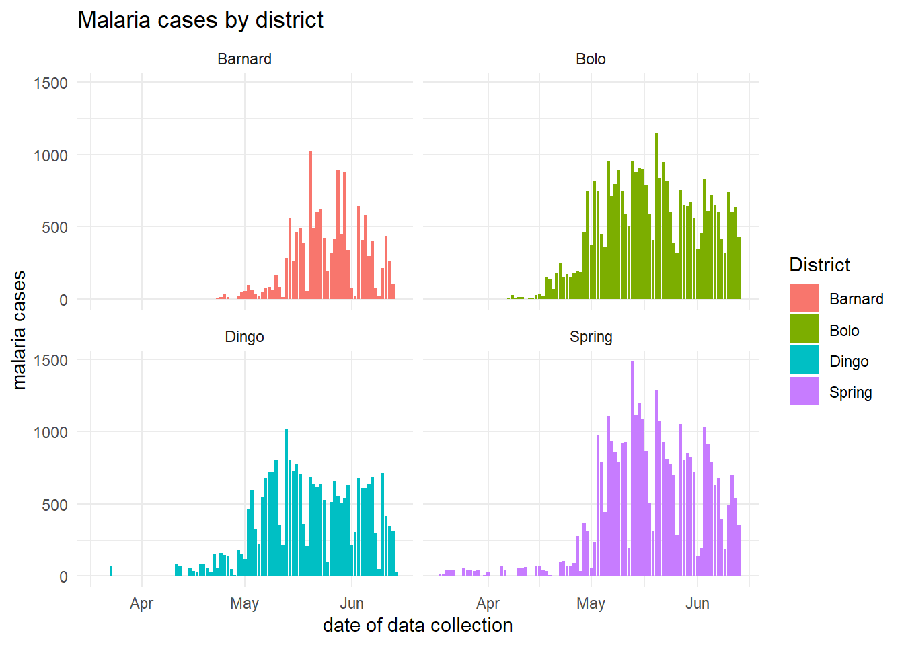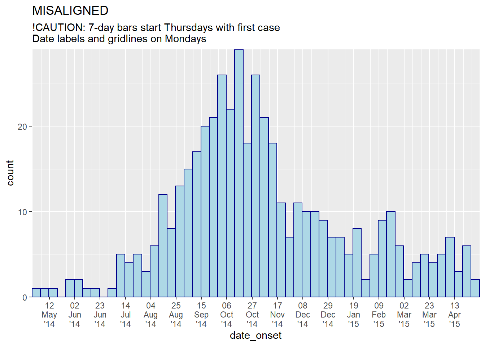


28.4 Faceting/small-multiples
As with other ggplots, you can create facetted plots (“small multiples”). As explained in the ggplot tips page of this handbook, you can use either:
facet_wrap()facet_grid()
facet_wrap()
For epicurves, facet_wrap() is typically easiest as it is likely that you only need to facet on one column. The general syntax is facet_wrap(rows ~ cols), where to the left of the tilde (~) is the name of a column to be spread across the “rows” of the facetted plot, and to the right of the tilde is the name of a column to be spread across the “columns” of the facetted plot.
Most simply, just use one column name, to the right of the tilde: facet_wrap(~age_cat).
Free axes
You will need to decide whether the scales of the axes for each facet are “fixed” to the same dimensions (default), or “free” (meaning they will change based on the data within the facet). Do this with the scales = argument within facet_wrap() by specifying “free_x” or “free_y”, or “free”.
Number of cols and rows of facets
This can be specified with ncol = and nrow = within facet_wrap().
Order of panels
To change the order of appearance, change the underlying order of the levels of the factor column used to create the facets.
Aesthetics
Font size and face, strip color, etc. can be modified through theme() with arguments like:
-
strip.text = element_text()(size, colour, face, angle…) -
strip.background = element_rect()(e.g. element_rect(fill=“red”))
-
strip.position =(position of the strip “bottom”, “top”, “left”, or “right”)
Strip labels
Labels of the facet plots can be modified through the “labels” of the column as a factor, or by the use of a “labeller”.
Make a labeller like this, using the function as_labeller() from ggplot2. Then provide the labeller to the labeller = argument of facet_wrap() as shown below.
my_labels <- as_labeller(c(
"0-4" = "Ages 0-4",
"5-9" = "Ages 5-9",
"10-14" = "Ages 10-14",
"15-19" = "Ages 15-19",
"20-29" = "Ages 20-29",
"30-49" = "Ages 30-49",
"50-69" = "Ages 50-69",
"70+" = "Over age 70"))An example facetted plot - facetted by column age_cat.
# make plot
###########
ggplot(central_data) +
geom_histogram(
aes(
x = date_onset,
group = age_cat,
fill = age_cat), # arguments inside aes() apply by group
color = "black", # arguments outside aes() apply to all data
# histogram breaks set to 7 days beginning Monday before first case
breaks = seq.Date(
from = as.Date(floor_date(min(central_data$date_onset, na.rm=T), "week", week_start = 1)),
to = as.Date(ceiling_date(max(central_data$date_onset, na.rm=T), "week", week_start = 1)),
by = "7 days"))+
# The labels on the x-axis
scale_x_date(expand = c(0,0), # remove excess x-axis space below and after case bars
date_breaks = "2 months", # labels appear every 2 months
date_minor_breaks = "1 month", # vertical lines appear every 1 month
date_labels = "%b\n'%y")+ # date labels format
# y-axis
scale_y_continuous(expand = c(0,0))+ # removes excess y-axis space between bottom of bars and the labels
# aesthetic themes
theme_minimal()+ # a set of themes to simplify plot
theme(plot.caption = element_text(face = "italic", hjust = 0), # caption on left side in italics
axis.title = element_text(face = "bold"),
legend.position = "bottom",
strip.text = element_text(face = "bold", size = 10),
strip.background = element_rect(fill = "grey"))+ # axis titles in bold
# create facets
facet_wrap(~age_cat,
ncol = 4,
strip.position = "top",
labeller = my_labels)+
# labels
labs(title = "Weekly incidence of cases, by age category",
subtitle = "Subtitle",
fill = "Age category", # provide new title for legend
x = "Week of symptom onset",
y = "Weekly incident cases reported",
caption = stringr::str_glue("n = {nrow(central_data)} from Central Hospital; Case onsets range from {format(min(central_data$date_onset, na.rm=T), format = '%a %d %b %Y')} to {format(max(central_data$date_onset, na.rm=T), format = '%a %d %b %Y')}\n{nrow(central_data %>% filter(is.na(date_onset)))} cases missing date of onset and not shown"))
See this link for more information on labellers.
Total epidemic in facet background
To show the total epidemic in the background of each facet, add a separate geom_histogram() command before the current one. Specify that the data used in this histogram is your data without the column used for faceting (use select()). Then, specify a color like “grey” and a degree of transparency to make it appear in the background.
geom_histogram(data = select(central_data, -age_cat), color = "grey", alpha = 0.5)+Note that the y-axis maximum is now based on the height of the entire epidemic.
ggplot(central_data, aes(x = date_onset)) +
# for background shadow of whole outbreak
geom_histogram(
data = select(central_data, -age_cat),
color = "grey",
alpha = 0.5)+
# actual epicurves by group
geom_histogram(
aes(group = age_cat, fill = age_cat), # arguments inside aes() apply by group
color = "black", # arguments outside aes() apply to all data
# histogram breaks set to 7 days beginning Monday before first case
breaks = seq.Date(
from = as.Date(floor_date(min(central_data$date_onset, na.rm=T), "week", week_start = 1)),
to = as.Date(ceiling_date(max(central_data$date_onset, na.rm=T), "week", week_start = 1)),
by = "7 days"))+
# Labels on x-axis
scale_x_date(
expand = c(0,0), # remove excess x-axis space below and after case bars
date_breaks = "2 months", # labels appear every 2 months
date_minor_breaks = "1 month", # vertical lines appear every 1 month
date_labels = "%b\n'%y")+ # date labels format
# y-axis
scale_y_continuous(expand = c(0,0))+ # removes excess y-axis space below 0
# aesthetic themes
theme_minimal()+ # a set of themes to simplify plot
theme(
plot.caption = element_text(face = "italic", hjust = 0), # caption on left side in italics
axis.title = element_text(face = "bold"),
legend.position = "bottom",
strip.text = element_text(face = "bold", size = 10),
strip.background = element_rect(fill = "white"))+ # axis titles in bold
# create facets
facet_wrap(
~age_cat, # each plot is one value of age_cat
ncol = 4, # number of columns
strip.position = "top", # position of the facet title/strip
labeller = my_labels)+ # labeller defines above
# labels
labs(
title = "Weekly incidence of cases, by age category",
subtitle = "Subtitle",
fill = "Age category", # provide new title for legend
x = "Week of symptom onset",
y = "Weekly incident cases reported",
caption = stringr::str_glue("n = {nrow(central_data)} from Central Hospital; Case onsets range from {format(min(central_data$date_onset, na.rm=T), format = '%a %d %b %Y')} to {format(max(central_data$date_onset, na.rm=T), format = '%a %d %b %Y')}\n{nrow(central_data %>% filter(is.na(date_onset)))} cases missing date of onset and not shown"))One facet with ALL data
If you want to have one facet box that contains all the data, complete the following steps. To do this, duplicate the entire dataset so that the number of rows doubles. There will also be a new column, in this case called facet. In this column, the duplicated rows will have the value “all”, and in the original rows will be the value of the faceting column - thus you have created a new column to facet on in which one of the unique values contains all the data from the original dataset. A “helper” function CreateAllFacet() below assist with this:
# Define helper function
CreateAllFacet <- function(df, col){
df$facet <- df[[col]]
temp <- df
temp$facet <- "all"
merged <-rbind(temp, df)
# ensure the facet value is a factor
merged[[col]] <- as.factor(merged[[col]])
return(merged)
}Now apply the helper function to the dataset, on column age_cat:
# Create dataset that is duplicated and with new column "facet" to show "all" age categories as another facet level
central_data2 <- CreateAllFacet(central_data, col = "age_cat") %>%
mutate(
facet = factor(facet,
levels = c("all", "0-4", "5-9",
"10-14", "15-19", "20-29",
"30-49", "50-69", "70+")))
# check
table(central_data2$facet, useNA = "always")##
## all 0-4 5-9 10-14 15-19 20-29 30-49 50-69 70+ <NA>
## 454 74 82 63 55 99 59 10 3 9Notable changes to the ggplot() command are:
- The data used is now central_data2 (double the rows, with new column “facet”)
- Labeller will need to be updated, if used
- Optional: to achieve vertically stacked facets: the facet column is moved to rows side of equation and on right is replaced by “.” (
facet_wrap(facet~.)), andncol = 1. You may also need to adjust the width and height of the saved png plot image (seeggsave()in ggplot tips).
ggplot(central_data2, aes(x = date_onset)) +
# actual epicurves by group
geom_histogram(
aes(group = age_cat, fill = age_cat), # arguments inside aes() apply by group
color = "black", # arguments outside aes() apply to all data
# histogram breaks set to 7 days beginning Monday before first case
breaks = seq.Date(
from = as.Date(floor_date(min(central_data$date_onset, na.rm=T), "week", week_start = 1)),
to = as.Date(ceiling_date(max(central_data$date_onset, na.rm=T), "week", week_start = 1)),
by = "7 days"))+
# Labels on x-axis
scale_x_date(expand = c(0,0), # remove excess x-axis space below and after case bars
date_breaks = "2 months", # labels appear every 2 months
date_minor_breaks = "1 month", # vertical lines appear every 1 month
date_labels = "%b\n'%y")+ # date labels format
# y-axis
scale_y_continuous(expand = c(0,0))+ # removes excess y-axis space between bottom of bars and the labels
# aesthetic themes
theme_minimal()+ # a set of themes to simplify plot
theme(plot.caption = element_text(face = "italic", hjust = 0), # caption on left side in italics
axis.title = element_text(face = "bold"),
legend.position = "bottom")+
# create facets
facet_wrap(facet~. , # each plot is one value of facet
ncol = 1)+
# labels
labs(title = "Weekly incidence of cases, by age category",
subtitle = "Subtitle",
fill = "Age category", # provide new title for legend
x = "Week of symptom onset",
y = "Weekly incident cases reported",
caption = stringr::str_glue("n = {nrow(central_data)} from Central Hospital; Case onsets range from {format(min(central_data$date_onset, na.rm=T), format = '%a %d %b %Y')} to {format(max(central_data$date_onset, na.rm=T), format = '%a %d %b %Y')}\n{nrow(central_data %>% filter(is.na(date_onset)))} cases missing date of onset and not shown"))28.5 Moving averages
See the page on Moving averages for detailed description and several options. Below is one option for calculating moving averages with the package slider.
* Plot the pre-calculated moving average:
* Aggregate the data as necessary (daily, weekly, etc.)
* Calculate the moving average
* Add the moving average to the ggplot (e.g. with geom_line())
28.5.1 Using slider
In this approach, the moving average is calculated in the dataset prior to plotting:
- Within
mutate(), a new column is created to hold the average.slide_index()from slider package is used as shown below.
- In the
ggplot(), ageom_line()is added after the histogram, reflecting the moving average.
See the helpful online vignette for the slider package
# load package
pacman::p_load(slider) # slider used to calculate rolling averages
# make dataset of daily counts and 7-day moving average
#######################################################
ll_counts_7day <- linelist %>%
## count cases by date
count(date_onset,
name = "new_cases") %>% # name of new column
filter(!is.na(date_onset)) %>% # remove cases with missing date_onset
## calculate the average number of cases in the preceding 7 days
mutate(
avg_7day = slider::slide_index( # create new column
new_cases, # calculate based on value in new_cases column
.i = date_onset, # index is date_onset col, so non-present dates are included in window
.f = ~mean(.x, na.rm = TRUE), # function is mean() with missing values removed
.before = 6, # window is the day and 6-days before
.complete = FALSE), # must be FALSE for unlist() to work in next step
avg_7day = unlist(avg_7day))
# plot
######
ggplot(data = ll_counts_7day, aes(x = date_onset)) +
geom_histogram(aes(y = new_cases),
fill="#92a8d1",
stat = "identity",
position = "stack",
colour = "#92a8d1")+
geom_line(aes(y = avg_7day, lty = "7-day \nrolling avg"),
color="red",
size = 1) +
scale_x_date(date_breaks = "1 month",
date_labels = '%d/%m',
expand = c(0,0)) +
scale_y_continuous(expand = c(0,0),
limits = c(0, NA)) +
labs(x="",
y ="Number of confirmed cases",
fill = "Legend")+
theme_minimal()+
theme(legend.title = element_blank()) # removes title of legend28.6 Tentative data
The most recent data shown in epicurves should often be marked as tentative, or subject to reporting delays. This can be done in by adding a vertical line and/or rectangle over a specified number of days. Here are two options:
- Use
annotate():-
Pros: Transparency of rectangle is easy to adjust. Cons: Items will not appear in legend.
- For a line use
annotate(geom = "segment"). Providex,xend,y, andyend. Adjust size, linetype (lty), and color.
- For a rectangle use
annotate(geom = "rect"). Provide xmin/xmax/ymin/ymax. Adjust color and alpha.
-
Pros: Transparency of rectangle is easy to adjust. Cons: Items will not appear in legend.
- Use
geom_segment()andgeom_rect():-
Pros: Items can easily appear in legend. Cons: Difficult to achieve semi-transparency of rectangle.
- Provide the same x/y arguments as noted above for
annotate()
-
Pros: Items can easily appear in legend. Cons: Difficult to achieve semi-transparency of rectangle.
CAUTION: While you can use geom_rect() to draw a rectangle, adjusting the transparency (alpha) does not work in a linelist context. This function overlays a rectangle for each observation/row!. Try a very low alpha (e.g. 0.01), or use annotate(geom = "rect") as shown.
Using annotate()
- Within
annotate(geom = "rect"), thexminandxmaxarguments must be given inputs of class Date.
- Note that because these data are aggregated into weekly bars, and the last bar extends to the Monday after the last data point, the shaded region may appear to cover 4 weeks
- Here is an
annotate()online example
ggplot(central_data, aes(x = date_onset)) +
# histogram
geom_histogram(
breaks = seq.Date(
from = as.Date(floor_date(min(central_data$date_onset, na.rm=T), "week", week_start = 1)),
to = as.Date(ceiling_date(max(central_data$date_onset, na.rm=T), "week", week_start = 1)),
by = "7 days"),
color = "darkblue",
fill = "lightblue") +
# scales
scale_y_continuous(expand = c(0,0))+
scale_x_date(
expand = c(0,0), # remove excess x-axis space below and after case bars
date_breaks = "1 month", # 1st of month
date_minor_breaks = "1 month", # 1st of month
date_labels = "%b\n'%y")+ # label format
# labels and theme
labs(title = "Using annotate()\nRectangle and line showing that data from last 21-days are tentative",
x = "Week of symptom onset",
y = "Weekly case indicence")+
theme_minimal()+
# add semi-transparent red rectangle to tentative data
annotate("rect",
xmin = as.Date(max(central_data$date_onset, na.rm = T) - 21), # note must be wrapped in as.Date()
xmax = as.Date(Inf), # note must be wrapped in as.Date()
ymin = 0,
ymax = Inf,
alpha = 0.2, # alpha easy and intuitive to adjust using annotate()
fill = "red")+
# add black vertical line on top of other layers
annotate("segment",
x = max(central_data$date_onset, na.rm = T) - 21, # 21 days before last data
xend = max(central_data$date_onset, na.rm = T) - 21,
y = 0, # line begins at y = 0
yend = Inf, # line to top of plot
size = 2, # line size
color = "black",
lty = "solid")+ # linetype e.g. "solid", "dashed"
# add text in rectangle
annotate("text",
x = max(central_data$date_onset, na.rm = T) - 15,
y = 15,
label = "Subject to reporting delays",
angle = 90)
The same black vertical line can be achieved with the code below, but using geom_vline() you lose the ability to control the height:
geom_vline(xintercept = max(central_data$date_onset, na.rm = T) - 21,
size = 2,
color = "black")Using geom_segment() and geom_rect()
In this alternative method, the red color is explained in the legend.
ggplot(central_data, aes(x = date_onset)) +
# histogram
geom_histogram(
breaks = seq.Date(
from = as.Date(floor_date(min(central_data$date_onset, na.rm=T), "week", week_start = 1)),
to = as.Date(ceiling_date(max(central_data$date_onset, na.rm=T), "week", week_start = 1)),
by = "7 days"),
color = "darkblue",
fill = "lightblue") +
# scales
scale_y_continuous(expand = c(0,0))+
scale_x_date(
expand = c(0,0), # remove excess x-axis space below and after case bars
date_breaks = "3 weeks", # Monday every 3 weeks
date_minor_breaks = "week", # Monday weeks
date_labels = "%d\n%b\n'%y")+ # label format
# labels and theme
labs(title = "Using geom_segment() and geom_rect()\nRectangle and line showing that data from last 21-days are tentative",
subtitle = "")+
theme_minimal()+
# make rectangle covering last 21 days
geom_rect(aes(
xmin = as.Date(max(central_data$date_onset, na.rm = T) - 21), # note must be wrapped in as.Date()
xmax = as.Date(Inf), # note must be wrapped in as.Date()
ymin = 0,
ymax = Inf,
color = "Reporting delays\npossible"), # sets label for legend (note: is within aes())
alpha = .002, # !!! Difficult to adjust transparency with this option
fill = "red")+
# make vertical line
geom_segment(aes(x = max(central_data$date_onset, na.rm = T) - 21,
xend = max(central_data$date_onset, na.rm = T) - 21,
y = 0,
yend = Inf),
color = "black",
lty = "solid",
size = 2)+
theme(legend.title = element_blank()) # remove title of legend
28.7 Multi-level date labels
If you want multi-level date labels (e.g. month and year) without duplicating the lower label levels, consider one of the approaches below:
Remember - you can can use tools like \n within the date_labels or labels arguments to put parts of each label on a new line below. However, the code below helps you take years or months (for example) on a lower line and only once.
A few notes on the code below:
- Case counts are aggregated into weeks for aesthetic reasons. See Epicurves page (aggregated data tab) for details.
- A line is used instead of a histogram, as the faceting approach below does not work well with histograms.
Aggregate to weekly counts
# Create dataset of case counts by week
#######################################
central_weekly <- linelist %>%
filter(hospital == "Central Hospital") %>% # filter linelist
mutate(week = lubridate::floor_date(date_onset, unit = "weeks")) %>%
count(week, .drop=F) %>% # summarize weekly case counts
filter(!is.na(week)) %>% # remove cases with missing onset_date
complete(week = seq.Date(from = min(week), # fill-in all weeks with no cases reported
to = max(week),
by = "week"))Make plots
# plot with box border on year
##############################
ggplot(central_weekly) +
geom_line(aes(x = week, y = n), # make line, specify x and y
stat = "identity") + # because line height is count number
scale_x_date(date_labels="%b", # date label format show month
date_breaks="month", # date labels on 1st of each month
expand=c(0,0)) + # remove excess space
facet_grid(~lubridate::year(week), # facet on year (of Date class column)
space="free_x",
scales="free_x", # x-axes adapt to data range (not "fixed")
switch="x") + # facet labels (year) on bottom
theme_bw() +
theme(strip.placement = "outside", # facet labels placement
strip.background = element_rect(fill = NA, # facet labels no fill grey border
colour = "grey50"),
panel.spacing = unit(0, "cm"))+ # no space between facet panels
labs(title = "Nested year labels, grey label border")
# plot with no box border on year
#################################
ggplot(central_weekly,
aes(x = week, y = n)) + # establish x and y for entire plot
geom_line(stat = "identity", # make line, line height is count number
color = "#69b3a2") + # line color
geom_point(size=1, color="#69b3a2") + # make points at the weekly data points
geom_area(fill = "#69b3a2", # fill area below line
alpha = 0.4)+ # fill transparency
scale_x_date(date_labels="%b", # date label format show month
date_breaks="month", # date labels on 1st of each month
expand=c(0,0)) + # remove excess space
facet_grid(~lubridate::year(week), # facet on year (of Date class column)
space="free_x",
scales="free_x", # x-axes adapt to data range (not "fixed")
switch="x") + # facet labels (year) on bottom
theme_bw() +
theme(strip.placement = "outside", # facet label placement
strip.background = element_blank(), # no facet lable background
panel.grid.minor.x = element_blank(),
panel.border = element_rect(colour="grey40"), # grey border to facet PANEL
panel.spacing=unit(0,"cm"))+ # No space between facet panels
labs(title = "Nested year labels - points, shaded, no label border")
The above techniques were adapted from this and this post on stackoverflow.com.
28.8 Aggregated data
Aggregating linelist data
To learn generally how to group and aggregate data, see the page on Grouping data.
In this circumstance, we demonstrate aggregating into weeks, months, and days.
Aggregating linelist into days
To aggregate a linelist into days, use the same approach but there is no need to create a new column. Use group_by() on the date column (e.g. date_onset).
If plotting a histogram, missing days in the data are not a problem as long as the column is class Date. However, it may be important for other types of plots or tables to have all possible days apear in the data. This is done with: tidyr::complete()
# Make dataset of weekly case counts
daily_counts <- linelist %>%
count(date_onset) %>% # count number of rows per unique date
filter(!is.na(date_onset)) %>% # remove aggregation of rows that were missing date_onset
complete(date_onset = seq.Date(min(date_onset), # ensure all days appear
max(date_onset),
by="day")) Aggregating linelist into weeks
Create a new column that is weeks, then use group_by() with summarize() to get weekly case counts.
To aggregate into weeks and show ALL weeks (even ones with no cases), do this:
- Create a new ‘week’ column within
mutate(), usingfloor_date()from the lubridate package:- use
unit =to set the desired time unit, e.g. "week`
- use
week_start =to set the weekday start of the week (7 = Sunday, 1 = Monday)
- use
- Follow with
complete()to ensure that all weeks appear - even those with no cases.
For example:
# Make dataset of weekly case counts
weekly_counts <- linelist %>%
mutate(
week = lubridate::floor_date(date_onset,
unit = "week")) %>% # new column of week of onset
count(week) %>% # group data by week and count rows per group
filter(!is.na(week)) %>% # remove entries for cases missing date_onset
complete(week = seq.Date(from = min(week), # fill-in all weeks with no cases reported
to = max(week),
by="week")) %>%
ungroup() # deactivate groupingHere are the first 50 rows of the resulting dataframe:
Alternatively, you can use the aweek package’s date2week() function. As shown below, set week_start = to “Sunday”, or “Monday”, etc. Set floor_date = TRUE so the output is YYYY-Www. Set factor = TRUE so that all possible weeks are included, even if there are no cases (this replaces the complete() step in the lubridate approach above). You can also use numeric = TRUE if you want only the week number (note this will not distinguish between years).
# Make dataset of weekly case counts
weekly_counts <- linelist %>%
mutate(week = aweek::date2week(date_onset, # new column of week of onset
floor_day = T, # show as weeks without weekday
factor = TRUE)) %>% # include all possible weeks
count(week) %>%
ungroup() # deactivate grouping
# Optional: add column of start DATE for each week - e.g. for ggplot() when date x-axis is expected
# note: add this step AFTER the above code, to ensure all weeks are present
weekly_counts <- weekly_counts %>%
mutate(week_as_date = aweek::week2date(week, week_start = "Monday")) # output is Monday date of each weekAggregating linelist into months
To aggregate cases into months, again use floor_date() from the lubridate package, but with the argument unit = "months". This rounds each date down to the 1st of its month. The output will be class Date.
Note that in the complete() step we also use “months”
# Make dataset of weekly case counts
monthly_counts <- linelist %>%
mutate(month = lubridate::floor_date(date_onset, unit = "months")) %>% # new column, 1st of month of onset
count(month) %>%
filter(!is.na(month)) %>%
complete(month = seq.Date(min(month), # fill-in all months with no cases reported
max(month),
by="month")) Plotting aggregated count data
Often instead of a linelist, you begin with aggregated counts from facilities, districts, etc. You can make an epicurve from ggplot() but the code will be slightly different. The incidence package does not currently support plotting of aggregated count data.
This section will utilize the count_data dataset that was imported earlier, in the data preparation section. It is the linelist aggregated to day-hospital counts. The first 50 rows are displayed below.
As before, we must ensure date variables are correctly classified.
# Convert Date variable to Date class
class(count_data$date_hospitalisation)## [1] "Date"Plotting daily counts
We can plot a daily epicurve from these daily counts. Here are the differences:
- Specify
y =to the counts column within the primary aestheticsaes() - Use of
stat = "identity"withingeom_histogram()indicates that the y-values could be counts from they =column inaes()
ggplot(data = count_data, aes(x = as.Date(date_hospitalisation), y = n_cases))+
geom_histogram(stat = "identity")+
labs(x = "Date of report",
y = "Number of cases",
Title = "Daily case incidence, from daily count data")
Plotting weekly counts
To aggregated the daily counts into weekly counts, we use the package lubridate and function floor_date(), as described above.
Note that we use group_by() and summarize() in place of count() because we need to sum() case counts instead of just counting the number of rows per group.
# Create weekly dataset with epiweek column
count_data_weekly <- count_data %>%
mutate(epiweek = lubridate::floor_date(date_hospitalisation, "week")) %>%
group_by(hospital, epiweek, .drop=F) %>%
summarize(n_cases_weekly = sum(n_cases, na.rm=T)) The first 50 rows of count_data_weekly are displayed below. You can see that the counts have been aggregated into weeks. Each week is displayed by the first day of the week (Monday by default).
YOu can also specify the factor level order of hospital (optional)
count_data_weekly <- count_data_weekly %>%
mutate(hospital = factor(hospital),
hospital = fct_relevel(hospital,
c("Missing", "Port Hospital",
"Military Hospital", "Central Hospital",
"St. Mark's Maternity Hospital (SMMH)",
"Other")))Now plot by epiweek. Remember stat = "identity" when making the histogram.
ggplot(data = count_data_weekly,
aes(x = epiweek,
y = n_cases_weekly,
group = hospital,
fill = hospital))+
geom_histogram(stat = "identity")+
# labels for x-axis
scale_x_date(date_breaks = "2 months", # labels every 2 months
date_minor_breaks = "1 month", # gridlines every month
date_labels = '%b\n%Y')+ #labeled by month with year below
# Choose color palette (uses RColorBrewer package)
scale_fill_brewer(palette = "Pastel2")+
theme_minimal()+
labs(x = "Week of onset",
y = "Weekly case incidence",
fill = "Hospital",
title = "Weekly case incidence, from aggregated count data by hospital")
28.9 Dual-axis
Although there are fierce discussions about the validity of dual axes within the data visualization community, many epi supervisors want to see an epicurve or similar chart with a percent overlaid with a second axis.
See the handbook page on ggplot tips for details on how to make a second axis.
28.10 Cumulative Incidence
If beginning with a case linelist, create a new column containing the cumulative number of cases per day in an outbreak using cumsum() from base R:
cumulative_case_counts <- linelist %>%
count(date_onset) %>% # count of rows per day (returned in column "n")
mutate(
cumulative_cases = cumsum(n) # new column of the cumulative number of rows at each date
)The first 10 rows are shown below:
This cumulative column can then be plotted against date_onset, using geom_line():
plot_cumulative <- ggplot()+
geom_line(
data = cumulative_case_counts,
aes(x = date_onset, y = cumulative_cases),
size = 2,
color = "blue")
plot_cumulative
It can also be overlaid onto the epicurve, with dual-axis using the cowplot method described in the ggplot tips page:
#load package
pacman::p_load(cowplot)
# Make first plot of epicurve histogram
plot_cases <- ggplot()+
geom_histogram(
data = linelist,
aes(x = date_onset),
binwidth = 1)+
labs(
y = "Daily cases",
x = "Date of symptom onset"
)+
theme_cowplot()
# make second plot of cumulative cases line
plot_cumulative <- ggplot()+
geom_line(
data = cumulative_case_counts,
aes(x = date_onset, y = cumulative_cases),
size = 2,
color = "blue")+
scale_y_continuous(
position = "right")+
labs(x = "",
y = "Cumulative cases")+
theme_cowplot()+
theme(
axis.line.x = element_blank(),
axis.text.x = element_blank(),
axis.title.x = element_blank(),
axis.ticks = element_blank())Now use cowplot to overlay the two plots. Attention has been paid to the x-axis alignment, side of the y-axis, and use of theme_cowplot().
aligned_plots <- align_plots(plot_cases, plot_cumulative, align="hv", axis="tblr")
ggdraw(aligned_plots[[1]]) + draw_plot(aligned_plots[[2]])